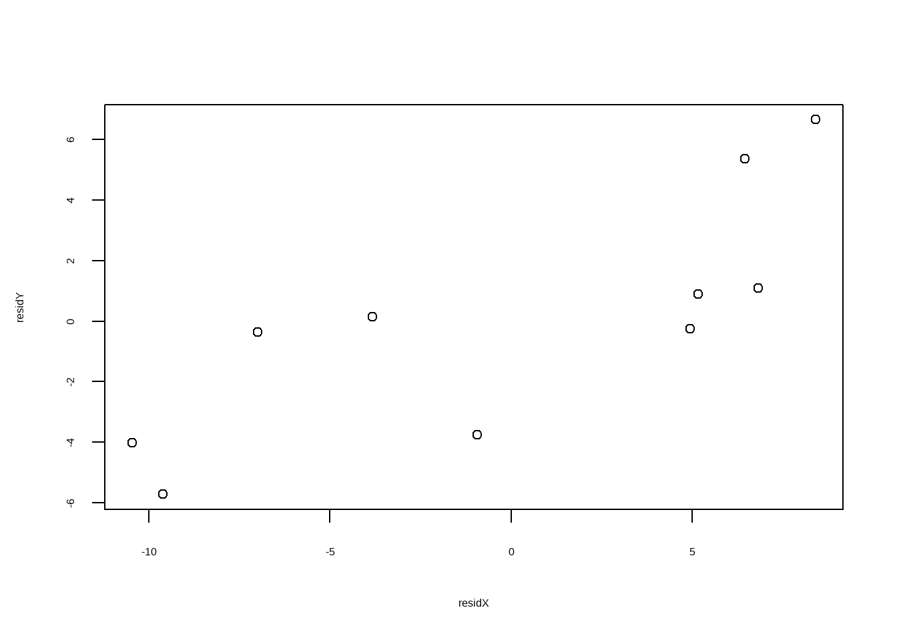

library(ppcor)
## Loading required package: MASS
df <- haven::read_sav("datasets/data01.sav")
df1 <- df[,2:4]
names(df1) <- c("height","weight","vc")
head(df1)
## # A tibble: 6 × 3
## height weight vc
## <dbl> <dbl> <dbl>
## 1 139. 30.4 2
## 2 164. 46.2 2.75
## 3 156. 37.1 2.75
## 4 156. 35.5 2
## 5 150. 31 1.5
## 6 145 33 2.516 偏相关和典型相关
使用R语言实现偏相关分析和典型相关分析，并画出偏相关的散点图。
关于偏相关和典型相关的具体含义和适用范围大家自己学习。
16.1 偏相关（partial correlation）
使用R包ppcor实现。
首先是加载数据和R包。
这个数据有3列，现在我们要探索身高（height）和体重（weight）的关系，其中vc是需要控制的因素。
首先进行pearson偏相关分析：
p1 <- pcor(df1,method = "pearson")
p1
## $estimate
## height weight vc
## height 1.0000000 0.7941292 -0.2022408
## weight 0.7941292 1.0000000 0.6166786
## vc -0.2022408 0.6166786 1.0000000
##
## $p.value
## height weight vc
## height 0.0000000000 0.0000491115 0.406351395
## weight 0.0000491115 0.0000000000 0.004920346
## vc 0.4063513954 0.0049203462 0.000000000
##
## $statistic
## height weight vc
## height 0.0000000 5.387551 -0.8514549
## weight 5.3875507 0.000000 3.2299064
## vc -0.8514549 3.229906 0.0000000
##
## $n
## [1] 20
##
## $gp
## [1] 1
##
## $method
## [1] "pearson"结果中$estimate给出了偏相关系数，可以看到在控制了vc后，height和weight的偏相关系数是0.7941292；$p.value给出了相应的P值，$statistic给出了检验统计量。
上面演示的是pearson偏相关分析，下面展示一个spearman偏相关分析。
# 加载数据
df2 <- haven::read_sav("datasets/data02.sav")
names(df2) <- c("id","x","y","z")
head(df2)
## # A tibble: 6 × 4
## id x y z
## <dbl> <dbl+lbl> <dbl+lbl> <dbl>
## 1 7 1 [矮] 1 [轻] 1.25
## 2 17 1 [矮] 1 [轻] 1.25
## 3 1 1 [矮] 1 [轻] 2
## 4 11 1 [矮] 1 [轻] 2
## 5 5 2 [中] 1 [轻] 1.5
## 6 15 2 [中] 1 [轻] 1.5现在我们要计算x和y的相关性，z是要控制的因素，由于这两个变量是分类变量，所以要用spearman偏相关分析。
其实用法是一样的，就是改个参数而已：
pcor(df2[,-1],method = "spearman")
## $estimate
## x y z
## x 1.0000000 0.6985577 -0.4212568
## y 0.6985577 1.0000000 0.8486095
## z -0.4212568 0.8486095 1.0000000
##
## $p.value
## x y z
## x 0.0000000000 8.779998e-04 7.245901e-02
## y 0.0008779998 0.000000e+00 4.386687e-06
## z 0.0724590110 4.386687e-06 0.000000e+00
##
## $statistic
## x y z
## x 0.000000 4.025172 -1.915103
## y 4.025172 0.000000 6.613943
## z -1.915103 6.613943 0.000000
##
## $n
## [1] 20
##
## $gp
## [1] 1
##
## $method
## [1] "spearman"结果解读同上。
16.1.1 偏相关散点图
还是用df1的数据作为演示，现在是研究weight对height的影响，vc是需要控制的变量。
所以我们可以分别计算残差，用残差的散点图代表偏相关的散点图。
# 首先计算height为因变量，vc是自变量的残差
residX <- resid(lm(height~vc,data = df1))
# 再计算weight为因变量，vc是自变量的残差
residY <- resid(lm(weight~vc, data = df1))
# 两个残差的相关系数就是weight和height的偏相关系数！
cor(residX, residY, method = "pearson")
## [1] 0.7941292
# 画图即可
plot(residX, residY)
但是这个图的横纵坐标取值范围对实际来说是不能解释的，所以我们可以分别加上它们各自的平均值，然后再画散点图，方法借鉴了这篇文章：
residX1 <- residX + mean(df1$height)
residY1 <- residY + mean(df1$weight)
plot(residX1, residY1,xlab = "身高",ylab = "体重")
这个就是偏相关散点图了！
16.2 典型相关（Canonical Correlation）
这个数据来自孙振球《医学统计学》第四版的例23-1，探讨小学生的生长发育指标（肺活量、身高、体重、胸围）和身体素质（短跑、跳高、跳远、实心球）的相互关系。
df <- read.csv("datasets/例23-1.csv",header = T)
psych::headtail(df)
## Warning: headtail is deprecated. Please use the headTail function
## 肺活量 身高 体重 胸围 短跑 跳高 跳远 实心球
## 1 1210 120.1 23.8 61 10.2 66.3 2.01 2.73
## 2 1210 120.7 23.4 59.8 11.3 67.6 1.92 2.71
## 3 1040 121.2 22.9 59 10.1 66.5 1.92 2.6
## 4 1620 121.5 24.6 59.5 9.5 67.8 1.95 2.64
## ... ... ... ... ... ... ... ... ...
## 81 1310 129.7 24.7 61.7 10.1 69.4 2.03 2.8
## 82 2280 143.6 37.6 70 9.7 88.8 2.17 4.18
## 83 1580 136.6 32.3 67.2 10.3 87.1 2.66 4.04
## 84 2370 147.4 38.8 73 10.8 90.7 2.82 4.38典型相关分析R语言自带了cancor()函数，无需借助第三方R包：
# 前4个变量和后4个变量做相关性，直接提供2个数据框也可以
cc1 <- cancor(df[,1:4],df[,5:8])
cc1
## $cor
## [1] 0.8858445 0.2791523 0.1940486 0.0379654
##
## $xcoef
## [,1] [,2] [,3] [,4]
## 肺活量 -5.267493e-05 -0.0001955795 -0.000407694 0.0002971469
## 身高 -7.754975e-03 -0.0086910713 0.021599065 0.0079782016
## 体重 -3.471120e-03 -0.0180620718 -0.015626841 -0.0522321990
## 胸围 -1.552353e-02 0.0464952778 0.004886088 0.0178728641
##
## $ycoef
## [,1] [,2] [,3] [,4]
## 短跑 0.02340474 -0.08458262 0.07017709 -0.13566387
## 跳高 -0.01068107 -0.02440377 0.01443519 0.01626168
## 跳远 -0.02867642 0.92500098 0.23862503 -0.29882238
## 实心球 -0.06884355 -0.07825414 -0.29442851 -0.19118769
##
## $xcenter
## 肺活量 身高 体重 胸围
## 1490.47619 131.52024 26.44405 61.51190
##
## $ycenter
## 短跑 跳高 跳远 实心球
## 10.271429 72.805952 2.109048 2.978929$cor给出了两组数据之间的典型相关系数，$xcoef是第一组的典型相关系数，可以看到计算出了4个虚拟变量，$ycoef是第二组的典型相关系数。
下面进行典型相关的显著性检验，使用R包CCP实现。
library(CCP)
rho <- cc1$cor
n <- dim(df[,1:4])[1]
p <- length(df[,1:4])
q <- length(df[,5:8])p.asym()函数实现典型相关的显著性检验。需要典型相关系数、观测个数、第一组的变量个数、第二组的变量个数。
# 4种典型相关的结果
p.asym(rho,n,p,q, tstat = "Wilks")
## Wilks' Lambda, using F-approximation (Rao's F):
## stat approx df1 df2 p.value
## 1 to 4: 0.1907537 10.4765088 16 232.8215 0.0000000
## 2 to 4: 0.8860745 1.0618303 9 187.5484 0.3930330
## 3 to 4: 0.9609581 0.7843615 4 156.0000 0.5369444
## 4 to 4: 0.9985586 0.1140327 1 79.0000 0.7364945
p.asym(rho,n,p,q, tstat = "Hotelling")
## Hotelling-Lawley Trace, using F-approximation:
## stat approx df1 df2 p.value
## 1 to 4: 3.770206950 17.5550261 16 298 0.0000000
## 2 to 4: 0.125083307 1.0632081 9 306 0.3898996
## 3 to 4: 0.040571670 0.7962190 4 314 0.5283457
## 4 to 4: 0.001443452 0.1161979 1 322 0.7334177
p.asym(rho,n,p,q, tstat = "Pillai")
## Pillai-Bartlett Trace, using F-approximation:
## stat approx df1 df2 p.value
## 1 to 4: 0.901742684 5.7482049 16 316 5.963363e-11
## 2 to 4: 0.117022206 1.0849404 9 324 3.733220e-01
## 3 to 4: 0.039096223 0.8192541 4 332 5.135803e-01
## 4 to 4: 0.001441371 0.1225607 1 340 7.264904e-01
p.asym(rho,n,p,q, tstat = "Roy")
## Roy's Largest Root, using F-approximation:
## stat approx df1 df2 p.value
## 1 to 1: 0.7847205 71.99119 4 79 0
##
## F statistic for Roy's Greatest Root is an upper bound.我们就看下Wilks结果，可以看到只有第一个典型相关系数是有意义的，后面3个都没有显著性。